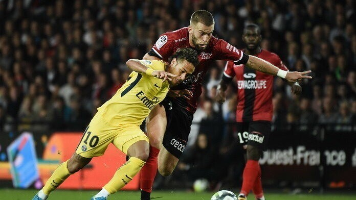
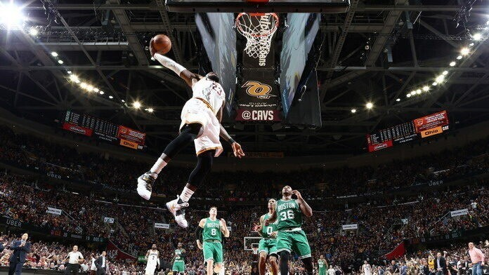
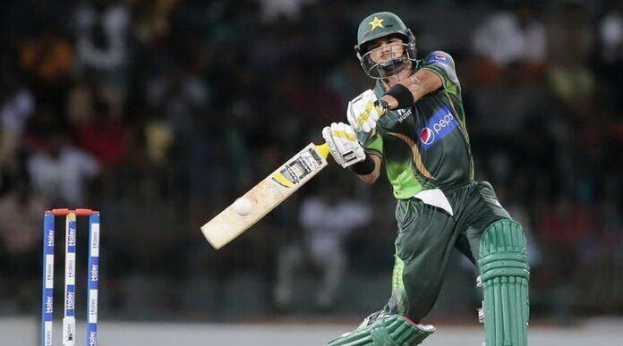
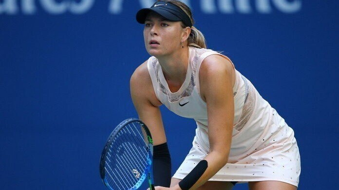

-

- Футбол 
- Баскетбол 
- Крикет 
- Большой теннис
футбол
С более чем 4 миллиардами поклонников, это, безусловно, самый популярный вид спорта в мире. Доминирование футбола на планете настолько очевидно, что первое место ни для кого не является сюрпризом. Основное распространение футбол получил в Европе, где для многих он стал не просто игрой, а образом жизни. Чемпионат мира ФИФА является самым знаковым событием в этом виде спорта.
Футбол также один из самых доступных видов спорта в мире, и вряд ли найдется такой человек, который ни разу в своей жизни не ударил по мячу. Новости футбола постоянно мелькают в заголовках крупнейших газет, особенно в Великобритании, Германии, Франции, Испании.
Самое популярное соревнование в мире: Чемпионат мира по футболу является самым ожидаемым спортивным событием. Финальный матч между Германией и Аргентиной собрал 700 миллионов телезрителей.
Наибольший призовой фонд: 1,5 миллиарда долларов ежегодно разыгрывается в Лиге Чемпионов – элите клубного европейского футбола.
Самый крупный телевизионный контракт: матчи английской Премьер-Лиги транслируются в 212 странах мира, и собирают у экранов почти 6 миллиардов телезрителей в течение сезона. Sky Sports и BT Sports пришлось выложить солидную сумму в 5,3 миллиарда фунтов за права на телетрансляцию в Великобритании. Еще 3 миллиарда фунтов были получены за счет продажи международных прав.
Большинство профессиональных лиг: профессиональные футбольные лиги существуют почти в каждой стране мира, и практически всегда состоят из нескольких дивизионов.
Крупнейших спонсорский контракт: Adidas выплачивает клубу “Манчестер Юнайтед” 75 миллионов фунтов стерлингов в год только за то, чтобы стать официальным поставщиком комплектов игровой формы. Большинство известных команд имеют подобные выгодные контракты с ведущими спортивными брендами.
Самые высокооплачиваемые спортсмены: лучшие игроки, такие как Неймар, Месси, Роналду, зарабатывают более 40 миллионов евро в год, и входят в десятку самых известных спортсменов в мире.
Самые богатые спортивные команды: в список из 50 самых богатых спортивных команд входит 30 футбольных клубов.
Самая крупная федерация: ФИФА – это крупнейшая и наиболее влиятельная спортивная организация. В ФИФА зарегистрировано более 200 национальных федераций и 6500 тысяч профессиональных футбольных клубов.
Самые популярные спортивные команды в социальных сетях: “Реал Мадрид” и “Барселона” на сегодняшний день имеют более 100 миллионов подписчиков.
Самый популярный спортсмен: Криштиану Роналду собрал в Facebook* и Twitter 150 миллионов подписчиков.
Баскетбол
У баскетбола более 1 миллиарда поклонников. Это один из самых рейтинговых видов спорта в США, а доходы NBA составляют более 5 миллиардов долларов ежегодно. Пользующиеся бешеным зрительским интересом профессиональные лиги в Испании, Греции, Италии, Франции, Аргентине и Китае делают баскетбол самым быстрорастущим видом спорта в мире.
Можно с уверенностью сказать, что в ближайшие 10 лет никто не сможет сравниться по популярности с футболом, но у баскетбола есть все шансы прочно оккупировать вторую строчку. Вот некоторые интересные факты, которые это доказывают:
Второе место по числу профессиональных лиг в мире: баскетбол уступает только футболу по количеству профессиональных лиг. В большинстве европейских стран лиги состоят из нескольких дивизионов.
Третья по величине спортивная лига в мире: НБА (Национальная баскетбольная ассоциация) занимает третье место по доходам, вслед за НФЛ и английской Премьер-лигой.
Самая высокая средняя зарплата: средняя годовая зарплата игроков в НБА составляет 4,4 миллиона долларов. Топ 40 игроков NBA зарабатывает более 15 миллионов долларов в год, а топ 10 – более 30 миллионов ежегодно.
Крупнейшие спонсорские контракты: такие игроки, как Леброн Джеймс, Кевин Дюрант и Стефен Карри, помимо солидной зарплаты, зарабатывают дополнительно более 50 миллионов в год за счет солидных спонсорских контрактов.
Самый быстрорастущий спорт: баскетбол также является самым быстрорастущим спортом в мире, начиная от доходов и заканчивая зрительским интересом. Все больше сильных команд появляется в таких странах, как Сербия, Венгрия, Чехия, Польша, где на матчах собираются полные трибуны.
Крикет
Многие даже и не подозревают, что у крикета более 2 миллиардов почитателей по всему миру. Основная география распространения этого вида спорта приходится на Англию, Индию, Пакистан, Бангладеш, Австралию, Новую Зеландию, Карибские острова и Южную Африку.
Такой популярности крикет в основном обязан индийскому субконтиненту. Возникшая в Англии игра быстро распространялась во всех частях земли, которые были колонизированы британцами. В Индии и Пакистане крикет это религия. Это источник патриотизма, способ снятия напряжения и синоним конкуренции.
Третье по популярности международное соревнование на планете: занимает уверенное третье место, вслед за Кубком мира ФИФА и Кубком мира по регби. А новый формат проведения Twenty20 позволил получать гораздо большую прибыль от продажи телевизионных прав.
Доминирующий вид спорта: в странах индийского субконтинента крикет и близко не имеет себе равных по популярности. А в Новой Зеландии, Австралии и Англии он является вторым по зрительскому интересу.
Женский крикет: число женщин на планете занимающихся крикетом стремительно растет. Благодаря усилиям ICC (Международный совет по крикету), в женских соревнованиях сейчас намного большие призовые, чем несколько лет назад.
Теннис
Глобальный охват и аудитория в 1 миллиард человек делают теннис самым популярным индивидуальным видом спорта в мире.
Самые высокие призовые в индивидуальном спорте: все четыре турнира Большого шлема – Australian Open, French Open, Уимблдон и USA Open обладают огромными призовыми фондами в десятки миллионов долларов.
Актуальность в течение года: теннисные мероприятия проходят по всему миру весь календарный год без перерывов, но основную зрительскую аудиторию собирают летом.
Самое престижное спортивное событие: Уимблдон – не только главный теннисный турнир, но и самое престижное спортивное событие. В 2016 и 2017 годах его посмотрело более 1 миллиарда телезрителей, а за финалом 2017 года наблюдало 17 миллионов человек только в Великобритании.
Самые высокооплачиваемые спортсмены: Роджер Федерер и Новак Джокович зарабатывают более 60 миллионов долларов за сезон, но лишь пятая часть из этих денег является призовыми.
Гендерное равенство: удивительно, но призовые в мужских и женских турнирах одинаковые. Кроме того, женские соревнования пользуются не меньшей популярностью чем мужские. Мария Шарапова и Серена Уильямс в какой-то момент своей карьеры входили в двадцатку самых высокооплачиваемых спортсменов планеты.
Чемпионы из 30 различных стран: в рейтинг 100 лучших игроков входят представители 45 государств. Теннисисты из 30 различных стран выигрывали по крайней мере один турнир Большого шлема, что является уникальным спортивным рекордом.